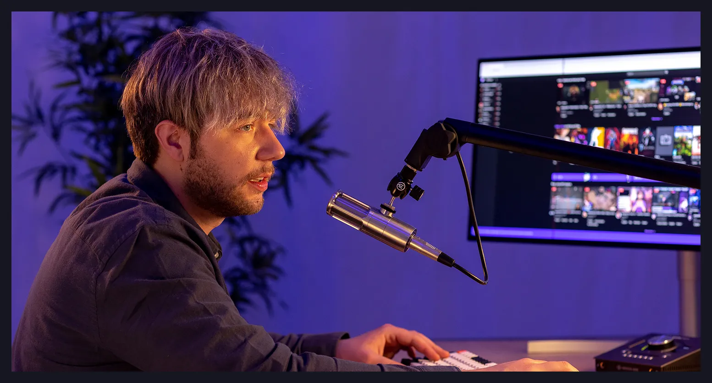

<!-- Hrabar Yana -->
<section class="about-us">
  <div class="about-us__container">
    <header class="about-us__header">
      <div class="about-us__header-wrapper">
        <div class="about-us__title-group">
          <h1 class="about-us__title">About Us</h1>
          <nav class="about-us__breadcrumb">
            <a class="about-us__breadcrumb-link" href="index.html">Home</a>
            <span class="about-us__breadcrumb-separator">></span>
            <a
              class="about-us__breadcrumb-link about-us__link--active"
              href="about-us.html"
              >About Us</a
            >
          </nav>
        </div>
        <p class="about-us__intro">
          Learn more about EchoWave Radio, our mission and vision, our
          employees, and our approach to broadcasting.
        </p>
      </div>
    </header>
    <div class="about-us__image-wrapper">
      
    </div>
    <div class="about-us__story">
      <div class="about-us-about__title">
        <p class="about-us__symbol">*</p>
        <p class="about-us__subtitle">OUR STORY</p>
      </div>
      <div class="about-us__text">
        <div class="about-us__text-first">
          <p>
            <span class="about-us__highlight">EchoWave Radio</span> is your
            favorite wave in New York. Thousands of citizens listen to our
            broadcasts, playlists, and podcasts while they commute, work, cook,
            love, and simply live.
          </p>
        </div>
        <p>
          At EchoWave, we believe in the extraordinary power of music to
          transcend boundaries, evoke emotions, and create lasting connections.
          Our journey began in New York in 2005, when our owner, Jack
          Richardson, met other music enthusiasts with a shared vision: to
          redefine the auditory experience.
        </p>
        <p>
          Today, EchoWave stands as a beacon of musical diversity, a community
          united by the love for extraordinary sounds. Reflect with us on our
          history, filled with gratitude for each note, each beat, and each
          listener who has been a part of this incredible journey. Here's to the
          years gone by and the countless beats yet to be discovered. Thank you
          for being part of our musical evolution.
        </p>
        <a href="podcasts.html" class="about-us__button button">Learn More</a>
      </div>
    </div>
  </div>
</section>
<!-- Hrabar Yana -->
